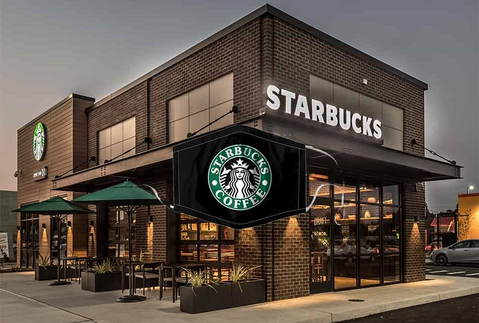

Le Concept Tsarbucks

Chez Tsarbucks, nous ne sommes pas simplement un salon de café, nous sommes une expérience. Inspiré par l'histoire et la culture russe, chaque Tsarbucks vous offre un cadre raffiné et confortable pour savourer des cafés de qualité supérieure.
En plus de déguster des boissons exquises, Tsarbucks vous invite à participer à des ateliers thématiques où vous pouvez en apprendre plus sur le café ou découvrir des aspects fascinants de la culture russe.